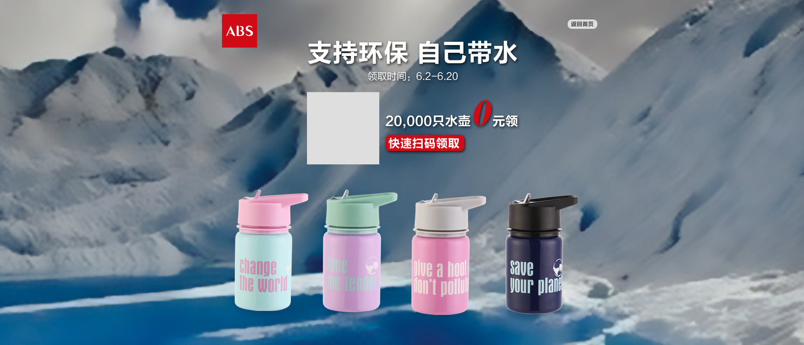
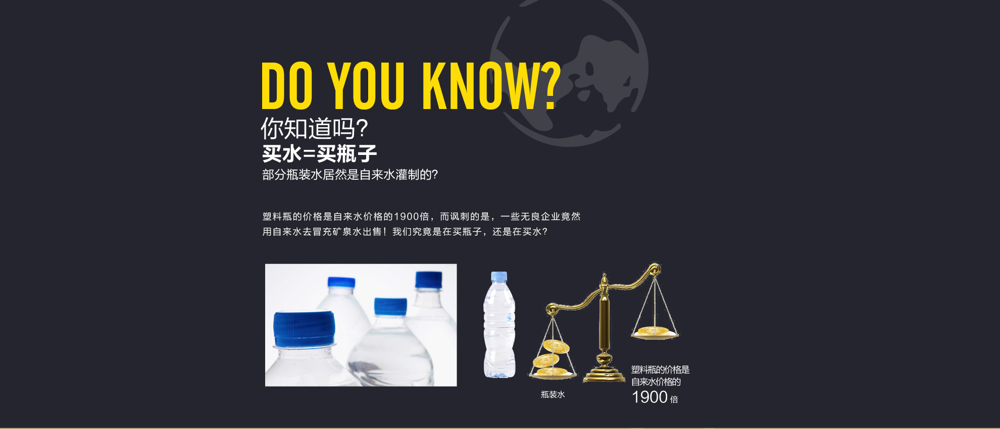
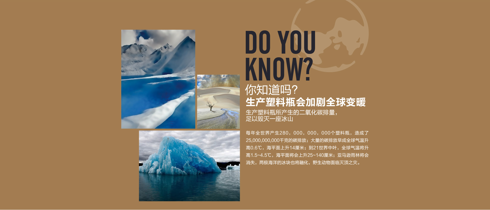

<!DOCTYPE html>
<html>
<head>
	<meta http-equiv="Content-Type" content="text/html; charset=utf-8">
    <meta http-equiv="X-UA-Compatible" content="IE=edge,chrome=1">
    <meta name="viewport" content="width=device-width,initial-scale=1,maximum-scale=1">
    <title>ABS</title>
    <link rel="stylesheet" type="text/css" href="css/main.css">
</head>
<!--[if lte IE 7]>      
<body scroll="no"> 
<![endif]-->
<!--[if gt IE 7]><!--> 
<body> 
<!--<![endif]-->
	<div id="article">

		<div class="page section1 current">
			<div class="contain">
				<div id="pageContain">
				<div class="page page1 current">
					<div class="contain">
						<!---->
					</div>
				</div>

			</div>
			</div>
		</div>

		<div class="page section2">
			<div class="contain">
				<!---->
			</div>
		</div>

		<div class="page section3">
			<div class="contain">
				<!---->
			</div>
		</div>

		<div class="page section4">
			<div class="contain">
				<!---->
			</div>
		</div>

       

   </div>

        

<script type="text/javascript" src="js/fullPage.min.js"></script>
<script type="text/javascript">
	
var runPage,
	runPage2,
    interval,
    autoPlay;

//autoPlay = function(to) {

//    clearTimeout(interval);
//    interval = setTimeout(function() {
//        runPage.go(to);
//    }, 5000);

//}

//runPage = new FullPage({

//	id : 'pageContain',                            // id of contain
//	slideTime : 1000,                               // time of slide
//    effect : {                                     // slide effect
//        transform : {
//        	translate : 'X',					   // 'X'|'Y'|'XY'|'none'
//        	scale : [0, 1],					   // [scalefrom, scaleto]
//        	rotate : [60, 0]					   // [rotatefrom, rotateto]
//        },
//        opacity : [0, 1]                           // [opacityfrom, opacityto]
//    },                           
//	mode : 'touch,nav:navBar',               // mode of fullpage
//	easing : [0, .93, .39, .98],                                // easing('ease','ease-in','ease-in-out' or use cubic-bezier like [.33, 1.81, 1, 1] )
//    callback : function(index, thisPage) {     // callback when pageChange

//        index = index + 1 > 3 ? 0 : index + 1;
//        autoPlay(index);
//    }
//});

runSection = new FullPage({

	id : 'article',                            // id of contain
	slideTime : 800,                               // time of slide
    effect : {                                     // slide effect
        transform : {
        	translate : 'Y',					   // 'X'|'Y'|'XY'|'none'
        	scale : [0, 1],					   // [scalefrom, scaleto]
        	rotate : [0, 0]					   // [rotatefrom, rotateto]
        },
        opacity : [0, 1]                           // [opacityfrom, opacityto]
    },
    mode: 'touch,wheel',               // mode of fullpage
	easing : [0, .93, .39, .98],
	callback : function(index, thisPage) {     // callback when pageChange

//        if (index === 0) {
//        	autoPlay(runPage.thisPage() + 1);
//        } else {
        	clearTimeout(interval);
//        }
    }
});

//interval = setTimeout(function() {
//    runPage.go(runPage.thisPage() + 1);
//}, 5000);

</script>
<!--[if lte IE 6]>
<script type="text/javascript" src="http://mat1.gtimg.com/cd/201108/app/DD_belatedPNG_0.0.8a.js" charset="utf-8"></script>
<script type="text/javascript">
DD_belatedPNG.fix("*");
</script>
<![endif]--> 
</body>
</html>
